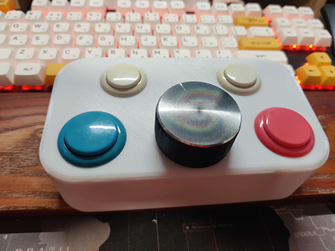

Arcade Spinner USB
Ce projet est une re-création moderne des spinners utilisés dans les bornes d’arcade, principalement pour les casse-briques comme Arkanoid.
L’objectif est d’offrir des sensations proches du matériel d’origine, avec des composants faciles à trouver.

L’ensemble du produit est libre : le code Arduino et les modèles 3D sont disponibles sur GitHub.